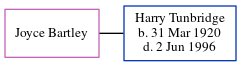

Joyce Margaret Tunbridge (née Bartley)
[ Home ] | [ Calendar ] | [ Surnames Index ] | [ Census Index ] | [ Family History ]Joyce Bartley, the wife of Harry Tunbridge (the second cousin once-removed on the father's side of Nigel Horne), and married Harry at St Martin's Church, 45 Church Road, Dover, Kent, England on Apr 11, 19421.
Citations
- England & Wales Marriages 1837-2005 - Findmypast
Media
Dover Express - 17 Apr 1942

Dover Express - 17 Apr 1942
England & Wales marriages 1837-2005 - BMD/M/1942/2/AZ/000085/006
Family Tree
Generated by ged2site. Last updated on Jun 11, 2024